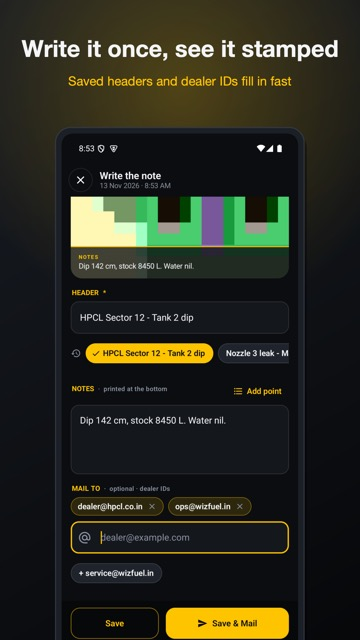

Wiz Snap Notes: काम के लिए आपकी फोटो मेमोरी
देखो। फोटो लो। याद रखो। एक फोटो लें, ऐप उस पर आपका हेडर, तारीख और समय, और नोट्स छाप देता है, और उसे सर्च होने वाली हिस्ट्री में रखता है। फील्ड ऑफिसर, पेट्रोल पंप डीलर, इंस्पेक्टर और मेंटेनेंस टीम के लिए।
Google Play पर पाएं Read in English


याद रखने का नया तरीका
एक फील्ड ऑफिसर दिन में 10 पेट्रोल पंप पर जाता है: कहीं टूटा साइनबोर्ड, कहीं लीकेज, कहीं अधूरा मेंटेनेंस, कहीं सेफ्टी की कमी। Snap Notes हर एक को फोटो नोट बना देता है, ताकि कुछ भी याद पर न टिके।
- कैप्चर: लंबे नोट्स लिखने के लिए काम न रोकें। एक फोटो काफ़ी है।
- सुरक्षित: फोटो, हेडर, नोट्स, तारीख और समय साथ रहते हैं, फोटो पर छपे हुए।
- याद: कोई भी शब्द लिखें और ठीक वही ढूंढें जो देखा था, और कब।
क्या करता है
- फोटो के ऊपर तारीख और समय के साथ हेडर, नीचे आपके नोट्स।
- सर्च होने वाली हिस्ट्री, नया सबसे ऊपर। आज, 7 दिन, 30 दिन या साइट हेडर से फ़िल्टर।
- Save & Mail: Gmail में पाने वाले, विषय, नोट्स और फोटो भरे हुए।
- गैलरी में Pictures/Wiz Snap Notes में कॉपी, WhatsApp पर भेजने के लिए।
- वैकल्पिक Google Drive बैकअप, आपकी अपनी Drive में।
- हाल के हेडर एक टैप में, ईमेल अपने आप और बुलेट पॉइंट।
- कोई विज्ञापन नहीं, कोई ट्रैकिंग नहीं, Drive बैकअप के बिना ऑफ़लाइन।
इनके लिए
- IOCL, BPCL, HPCL, Jio-bp, Nayara और Shell पेट्रोल पंप पर साइट विज़िट और इंस्पेक्शन।
- मेंटेनेंस और रिपेयर रिकॉर्ड, पहले और बाद की फोटो।
- सेफ्टी चेक, ऑडिट और शिकायत, समय के सबूत के साथ।
- स्टॉक, मीटर और डिप रीडिंग।
- दुकान विज़िट, डिलीवरी, खरीदारी की लिस्ट और जो कुछ भी भूलना नहीं है।
Wiz Labs के और ऐप
- Wiz Dip Charts: पेट्रोल पंप टैंक डिप चार्ट।
- Wiz Fuel Density: 15°C पर पेट्रोल और डीज़ल डेंसिटी।
सवाल
Wiz Snap Notes क्या है?
काम के लिए एक फोटो मेमोरी ऐप। आप फोटो लेते हैं, हेडर और नोट्स लिखते हैं, और ऐप उन्हें तारीख और समय के साथ फोटो पर छाप देता है। हर फोटो नोट सर्च होने वाली हिस्ट्री में सेव होता है, ताकि सेकंडों में मिल जाए।
यह आम नोट्स ऐप या कैमरा से अलग कैसे है?
नोट्स ऐप में फोटो नहीं होती, और कैमरा में जानकारी नहीं होती। Snap Notes दोनों साथ रखता है: फोटो, वह किस बारे में है, और कब ली गई, सब फोटो पर छपा और किसी भी शब्द से सर्च होने वाला।
क्या इसे पेट्रोल पंप इंस्पेक्शन के लिए इस्तेमाल कर सकते हैं?
हाँ। यह IOCL, BPCL, HPCL, Jio-bp, Nayara और Shell पेट्रोल पंप की साइट विज़िट के लिए बना है: टूटे साइनबोर्ड, लीकेज, अधूरा मेंटेनेंस, सेफ्टी और डिप या मीटर रीडिंग। यह किसी भी इंस्पेक्शन, मेंटेनेंस रिकॉर्ड या साइट विज़िट के लिए काम करता है।
डीलर को फोटो नोट कैसे भेजें?
एक या ज़्यादा ईमेल ID जोड़ें और Save & Mail दबाएं। Gmail में पाने वाले, विषय, नोट्स और फोटो भरे हुए खुलते हैं, आप Send दबाते हैं। आप फोटो WhatsApp या किसी भी ऐप पर भी शेयर कर सकते हैं।
क्या यह बिना इंटरनेट चलता है?
हाँ। Google Drive बैकअप के बिना ऐप पूरी तरह ऑफ़लाइन चलता है और आपकी फोटो और नोट्स आपके फोन में रहते हैं। Drive बैकअप वैकल्पिक है।
क्या यह फ्री है?
हाँ। कोई विज्ञापन नहीं, कोई ट्रैकिंग नहीं, कोई अकाउंट नहीं।